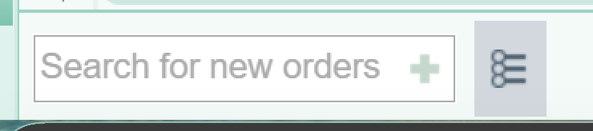

Letters, Forms & Orders
What to Send to Whom
Find the right recipient: Rashunda / Admin, Faith / Social Worker, or RN / LPN. Includes letters, disability and leave forms, driving forms, medication assistance, and therapy orders.
Clinic Resources
Practical resources for the epilepsy clinic.
Letters, Forms & Orders
Find the right recipient: Rashunda / Admin, Faith / Social Worker, or RN / LPN. Includes letters, disability and leave forms, driving forms, medication assistance, and therapy orders.
Epic referral steps, patient selection, consultation scope, and capacity notes for the dedicated epilepsy Psychiatry pathway.
An Epic SmartPhrase with patient explanation, therapy contacts, ReACT referrals, and education links.
Medtronic, Boston Scientific, LivaNova, lamotrigine manufacturer contacts, and Xcopri patient assistance.
FND SmartPhrase — referrals and patient education
Lamictal blue titration, Xcopri starter packs, and a pregnancy ASM tracking table.
Abridge Prompts — Clinical documentation prompts in Emory SharePoint. Emory sign-in required.
EPIJOBASSIST — Job Assistance Program referrals.EPIPSYCHIATRIST — Psychiatry referrals; also includes a couple of therapy referrals.EPISSDIAPP — Social Security Disability application instructions.The three Epic phrase names above were supplied September 25, 2026; their full text has not been supplied. Medication templates are available on the linked page.
Use Epic’s epilepsy medication preference list to find orders with preset titration plans, rescue-medication doses, and refills.

Medication titration templates · Patient assistance contacts